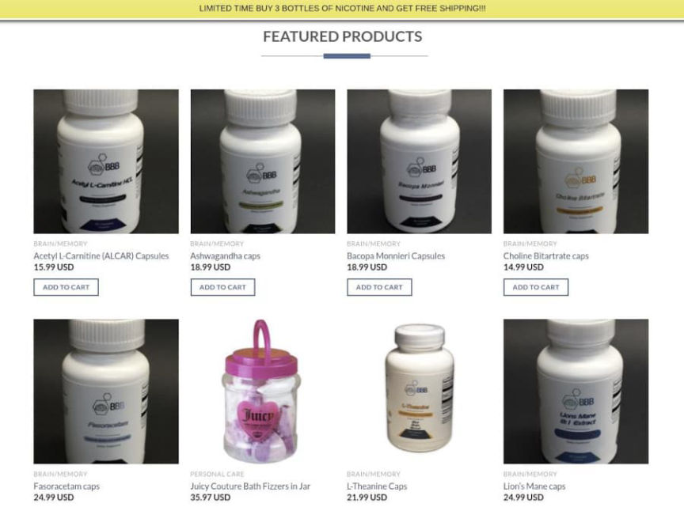
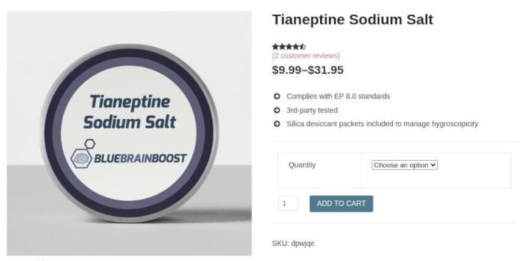
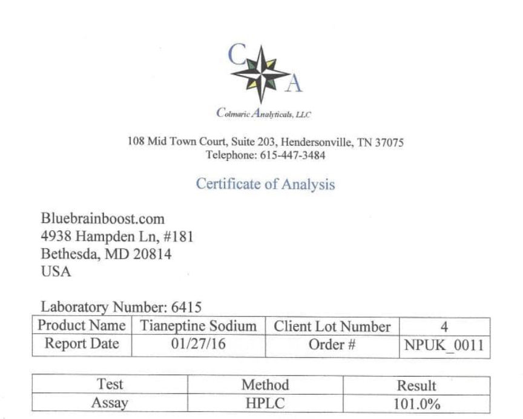
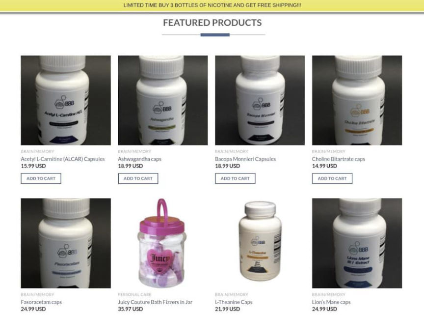
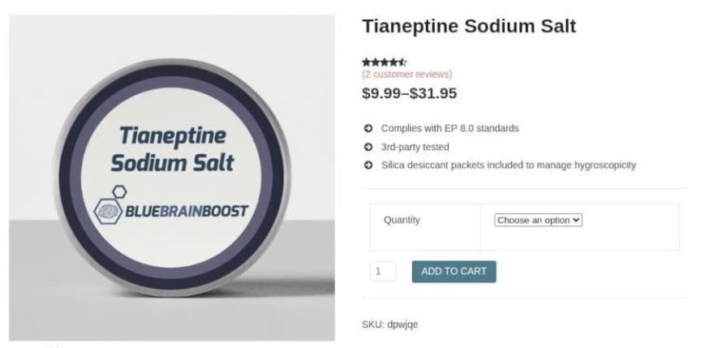
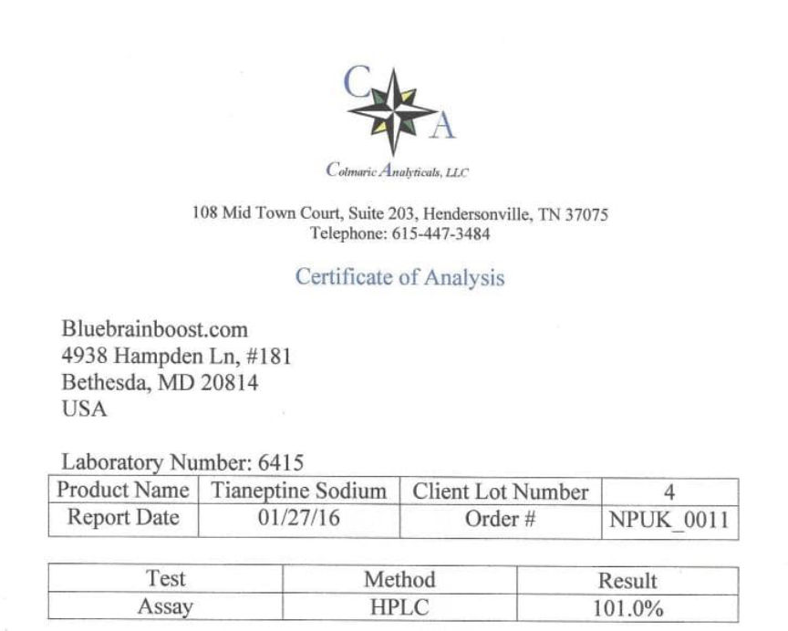

Two Sentenced to Prison for Selling Nootropics Online
A federal judge sentenced a seller of nootropics to six months in prison.
The United States Attorney’s Office for the District of Colorado announced the sentencing of Mark Godding and Linda Godding for selling unapproved drugs. United States District Court Chief Judge Philip A. Brimmer sentenced both defendants to six months in federal prison.
“Prescription drugs that are smuggled from overseas and are outside the secure supply chain can present a serious health risk to those who use them. The drugs may contain unknown or dangerous ingredients and are manufactured under unknown or unregulated conditions,” said Special Agent in Charge Charles L. Grinstead, FDA Office of Criminal Investigations Kansas City Field Office. “We will continue to investigate and bring to justice those who traffic in illegal prescription drugs.”
The couple purchased the business Mighty Stacks, LLC. in December 2016. Starting in January 2017, Mighty Stacks, LLC, did business through Blue Brain Boost using the website bluebrainboost.com.
An archived version of the site lists some of the products sold by the site. In 2020, the substances sold on bluebrainboost.com included:[list]*Acetyl L-Carnitine*Ashwagandha*Bacopa Monnieri*Choline Bitartrate*Fasoracetam*L-Theanine*Lion’s Mane*Nicotine Solution*Reusable Black Face Mask[/list]

In 2017, the company listed tianeptine for sale on bluebrainboost.com. Wikipedia:
“Tianeptine, sold under the brand names Stablon and Coaxil among others, is an atypical antidepressant which is used mainly in the treatment of major depressive disorder, although it may also be used to treat anxiety, asthma, and irritable bowel syndrome.”
“Tianeptine has antidepressant and anxiolytic effects with a relative lack of sedative, anticholinergic, and cardiovascular side effects. It has been found to act as an atypical agonist of the μ-opioid receptor with clinically negligible effects on the δ- and κ-opioid receptors.”

Tianeptine is not approved for use in the United States. Although it is not federally controlled, several states have passed laws prohibiting the use of tianeptine.
The defendants purchased their products from suppliers in China, repacked them, added Blue Brain Boost labels, and then sent them to customers. According to the announcement from the U.S. Attorney’s Office for the District of Colorado, “defendants fraudulently misled customers by advertising that their products were tested by independent labs.” Although the defendants claimed they were “compulsive” about quality control, they rarely tested their products.
Archived copies of the site contain links to multiple COAs.

“The defendants knowingly, intentionally, and repeatedly placed customers at risk, and they undermined and evaded the extensive regulations put in place to protect those consumers,” said U.S. Attorney Cole Finegan. “Their sentences should send a message to other businesses that we will hold you accountable if you disregard the law and threaten public health.”
United States District Court Chief Judge Brimmer sentenced Linda Godding to six months in federal prison on June 10, 2022. The judge sentenced Mark Godding in May 2022.
Fort Collins Couple Sentenced to Federal Prison for Illegally Selling Unapproved Drugs | archive.is, archive.org, justice.gov
The United States Attorney’s Office for the District of Colorado announced the sentencing of Mark Godding and Linda Godding for selling unapproved drugs. United States District Court Chief Judge Philip A. Brimmer sentenced both defendants to six months in federal prison.
The defendants sold unapproved drugs under the name Blue Brain Boost.
“Prescription drugs that are smuggled from overseas and are outside the secure supply chain can present a serious health risk to those who use them. The drugs may contain unknown or dangerous ingredients and are manufactured under unknown or unregulated conditions,” said Special Agent in Charge Charles L. Grinstead, FDA Office of Criminal Investigations Kansas City Field Office. “We will continue to investigate and bring to justice those who traffic in illegal prescription drugs.”
The couple purchased the business Mighty Stacks, LLC. in December 2016. Starting in January 2017, Mighty Stacks, LLC, did business through Blue Brain Boost using the website bluebrainboost.com.
An archived version of the site lists some of the products sold by the site. In 2020, the substances sold on bluebrainboost.com included:[list]*Acetyl L-Carnitine*Ashwagandha*Bacopa Monnieri*Choline Bitartrate*Fasoracetam*L-Theanine*Lion’s Mane*Nicotine Solution*Reusable Black Face Mask[/list]

Many of the products sold by the defendants, save for the racetams, can be found at grocery stores.
In 2017, the company listed tianeptine for sale on bluebrainboost.com. Wikipedia:
“Tianeptine, sold under the brand names Stablon and Coaxil among others, is an atypical antidepressant which is used mainly in the treatment of major depressive disorder, although it may also be used to treat anxiety, asthma, and irritable bowel syndrome.”
“Tianeptine has antidepressant and anxiolytic effects with a relative lack of sedative, anticholinergic, and cardiovascular side effects. It has been found to act as an atypical agonist of the μ-opioid receptor with clinically negligible effects on the δ- and κ-opioid receptors.”

Large doses of tianeptine produce opioid-like euphoria in some users.
Tianeptine is not approved for use in the United States. Although it is not federally controlled, several states have passed laws prohibiting the use of tianeptine.
The defendants purchased their products from suppliers in China, repacked them, added Blue Brain Boost labels, and then sent them to customers. According to the announcement from the U.S. Attorney’s Office for the District of Colorado, “defendants fraudulently misled customers by advertising that their products were tested by independent labs.” Although the defendants claimed they were “compulsive” about quality control, they rarely tested their products.
Archived copies of the site contain links to multiple COAs.

One of the many COAs available on the nootropic shop.
“The defendants knowingly, intentionally, and repeatedly placed customers at risk, and they undermined and evaded the extensive regulations put in place to protect those consumers,” said U.S. Attorney Cole Finegan. “Their sentences should send a message to other businesses that we will hold you accountable if you disregard the law and threaten public health.”
United States District Court Chief Judge Brimmer sentenced Linda Godding to six months in federal prison on June 10, 2022. The judge sentenced Mark Godding in May 2022.
Fort Collins Couple Sentenced to Federal Prison for Illegally Selling Unapproved Drugs | archive.is, archive.org, justice.gov